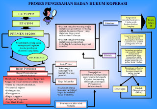

CARA PENDIRIAN KOPERASI

Dalam Proses Pengesahan Badan Hukum Koperasi terdapat pokok-pokok yang perlu diperhatikan...
Read MoreKOPERASI INDONESIA
Koperasi berasal dari dua suku kata bahasa Inggris, yaitu...
Read MorePERUSAHAAN
Perusahaan adalah setiap bentuk usaha yang menjalankan jenis usaha...
Read MoreCara Pendirian PT
Perseroan Terbatas atau yang biasa disebut PT...
Read MoreCara Pendirian CV
Comanditaire Venootschap atau biasa disebut CV...
Read More